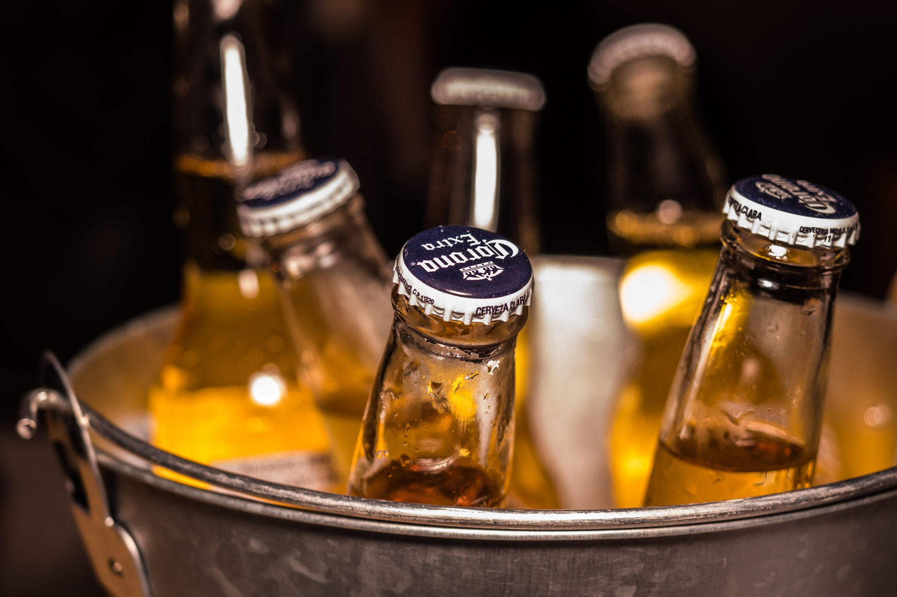
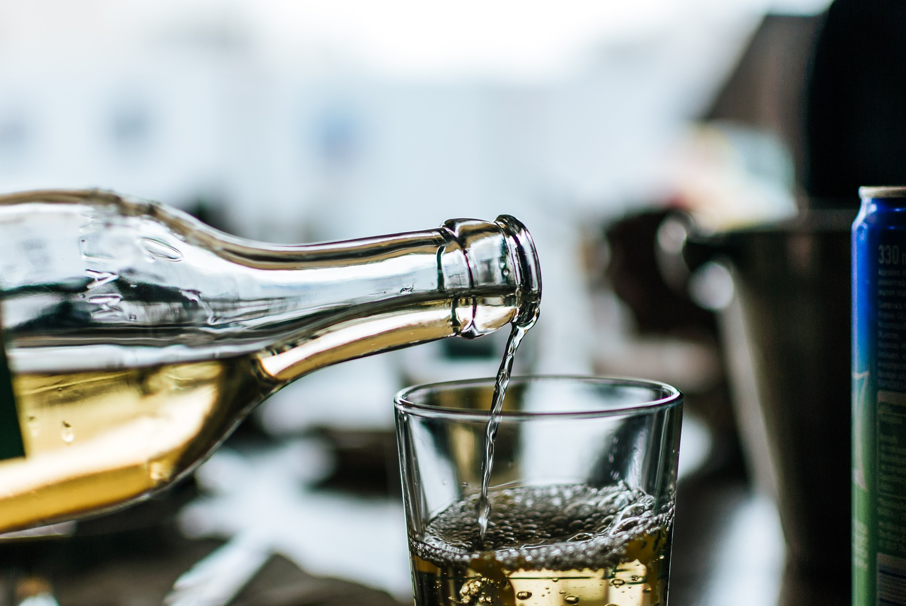

Craft Beers
There’s no snobbery involved and certainly no pretentious pauses or long-winded discussions after each sip. We make great beer for everyone. It’s that simple.
spirits
Hand crafted by Britain's Oldest Distillers, Greenall's Gin remains true to our founder's vision to create the first quality crafted gin. Greenall's The Original London Dry Gin remains unchanged from the original recipe, closely guarded by just seven master distillers in our 250-year history. Today we continue to build on this classic, award winning recipe as we create new and original gins, just as our founder did all those years ago.